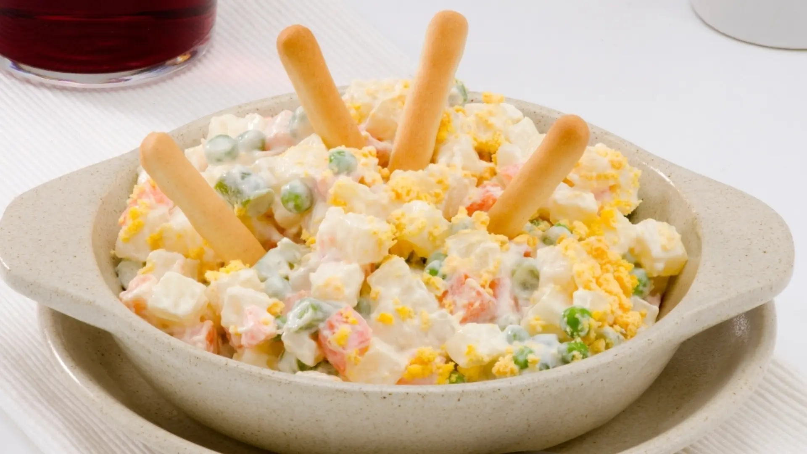

Olivier Salad

A recipe originating in Spain, mixing sweet and savory flavors, which together create an explosion of flavor in the mouth. 10/10.
Ingredients
- Potatoes
- Green peas
- Carrots
- Tuna
- Eggs
- Mayonnaise
Steps
- Cook the peas in lightly salted water for 10 minutes. Drain and set aside.
- Cook the diced carrots in lightly salted water for about 15-20 minutes. When they are tender, turn off the heat, drain and set aside.
- Cook the eggs for 7-8 minutes. Cool them under cold water and let them warm up before peeling and reserving them.
- Peel the potatoes and cut them into cubes. Cook the potatoes in salted water for 12-15 minutes.
When we see that they are tender, drain them and reserve. We must be aware of the cooking time to avoid overcooking.
- Put the carrots, peas and boiled potatoes in a bowl. Mix carefully so as not to break the vegetables.
Crumble the tuna and add it. Chop the boiled eggs and add them as well. We only have to add the mayonnaise to the mixture and stir carefully.
Keep the salad in the refrigerator until serving time.